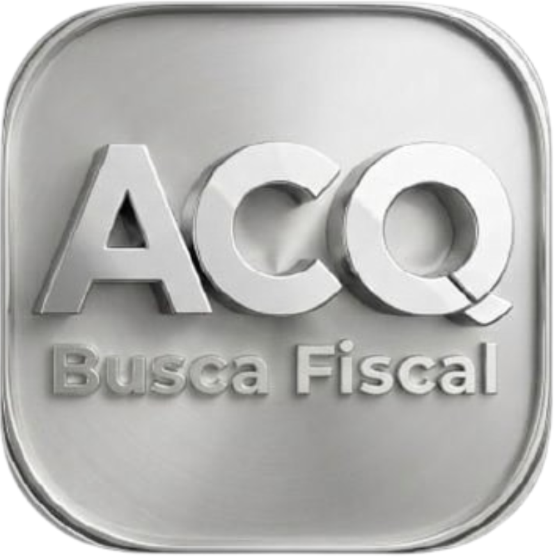

Instale o app
Busca Fiscal
para acesso rápido e offline.
INSTALAR
Busca Fiscal Inteligente
NCM
+
CEST
+
CNAE
+
NBS
Consulte de forma unificada e rápida.
Cadastre-se e baixe o App
CNAE — ISS / NBS / Simples
NCM — Mercosul
Digite aqui o Código ou descrição CNAE
Limpar
Consulta NCM — Nomenclatura Comum do Mercosul
Busca em tempo real via BrasilAPI · Digite o código de 8 dígitos ou palavras-chave
Código
Texto
Limpar